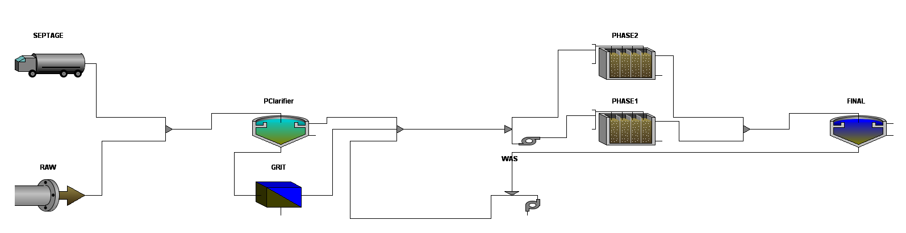

BioChem provides consulting services for engineering designers, operators and owners of wastewater treatment plants. BioChem's engineering services are based upon technological optimization achieved through high-level expertise and the use of innovative technologies. The Company's long experience in the fields of biotechnology and wastewater management has provided it with the detailed and practical knowledge of bacterial populations necessary for the full optimization of wastewater treatment processes.
Typically, BioChem engineers visit the individual site, review historical plant data, take real-time data on the process, and subject those to comprehensive analyses. This provides the basis for recommending individual and customized strategies for optimizing the treatment process and reducing operating costs.

In addition, the Company's engineers are qualified users of the major commercial WWT simulation programs and can provide fast and accurate process modeling and optimization calculations.
Please contact us for more information regarding our consulting services.